Research
Our ongoing research interests are in wireless communications and networking, with the intersection of communication theory, signal processing, mathematics, and artificial intelligence. We focus on developing fundamental mathematical tools and communication principles to design and build smart communication systems. Our research is largely interdisciplinary and draws upon tools from optimization, probability and statistics, machine learning, game theory, control, and economics to design and build wireless communication systems.
We are currently focused on several research thrusts for next generation mobile networks (6G):
Resource Management in Satellite-Terrestrial Integrated Network (STIN)
Satellite-Borne and Terminal Physical-Layer Communication Algorithms
In-Space Computing and Space-Native Artificial Intelligence (AI)
Preliminary Research on Large-Scale Satellite Constellation Networking Technologies

1. Resource Management in Satellite-Terrestrial Integrated Network (STIN)
Driven by booming non terrestrial networks (NTNs) and large scale satellite constellations, future wireless systems are evolving from purely terrestrial cellular networks toward highly heterogeneous satellite terrestrial integrated networks (STIN). By combining satellite and terrestrial infrastructures, 6G aims to deliver ubiquitous connectivity, flexible access and continuous service coverage across diverse geographic regions. Nevertheless, space and terrestrial segments differ drastically in network topology, radio propagation, resource availability, node mobility and service demands. The inherently dynamic satellite topology together with scarce spectrum, onboard power and computing resources brings substantial obstacles to stable and efficient network operation.
Sophisticated resource management is critical to orchestrate heterogeneous space ground subsystems and unleash their complementary strengths. We develop mathematical frameworks, analytical tools, optimization methods and AI driven strategies for STIN resource management. Our work spans multi connectivity, spectrum sharing, cooperative transmission, interference mitigation, satellite integrated sensing and communications (ISAC), as well as joint communication computation resource allocation.
Joint spectrum, power, and user association optimization
Multi connectivity and cooperative satellite terrestrial communications
Spectrum sharing between satellite and terrestrial networks
Interference management for STIN
Resource allocation for satellite empowered computing
Satellite integrated sensing and communication (ISAC) networks
Large scale resource management for 6G non terrestrial networks, etc.
|
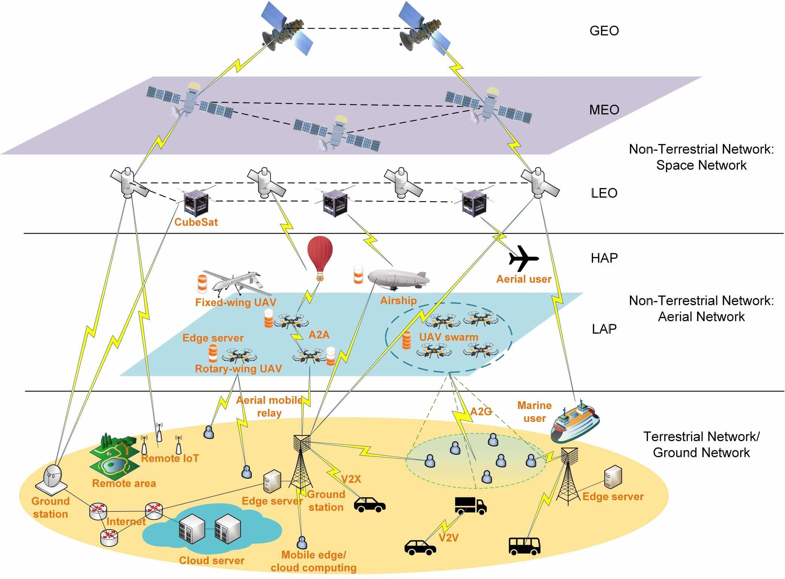 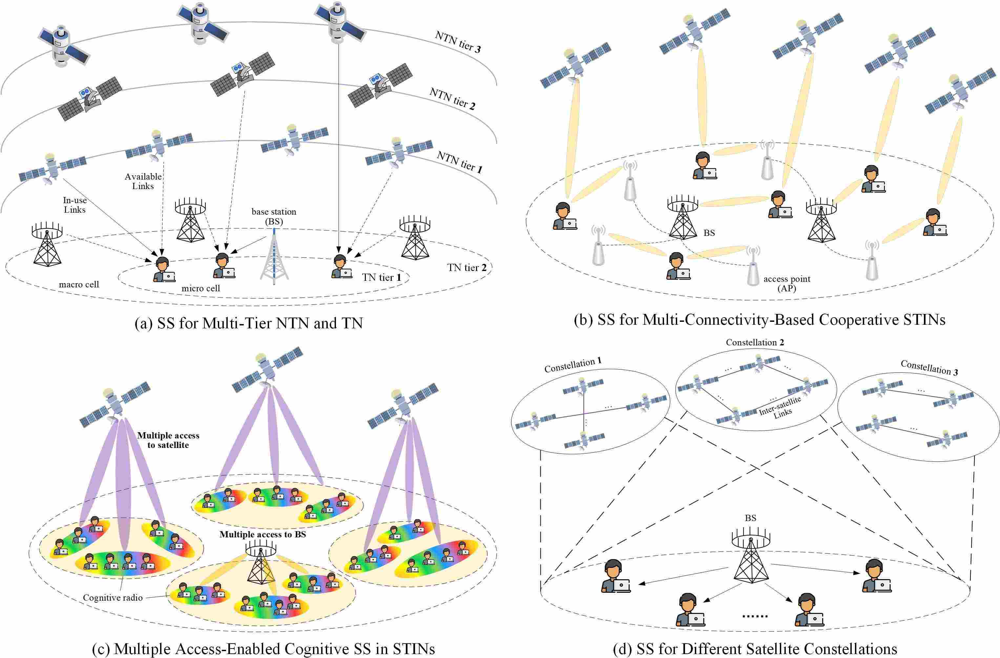 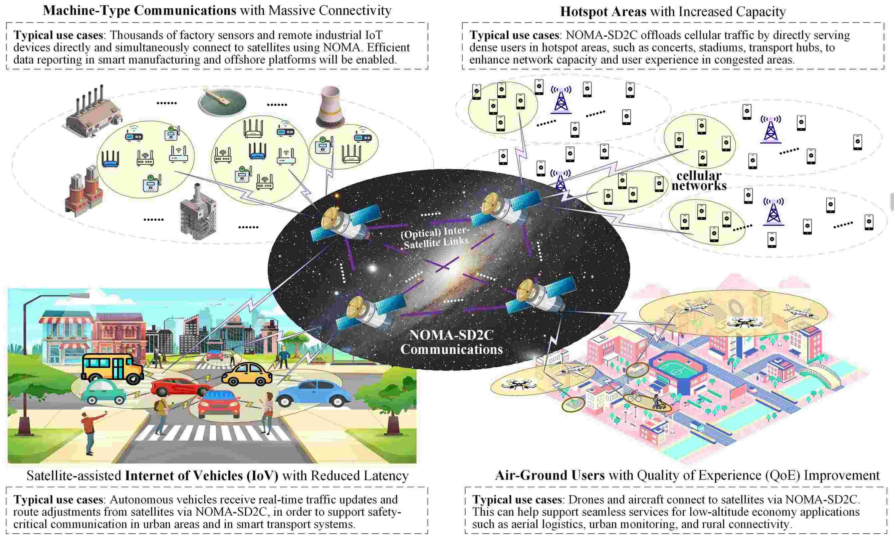 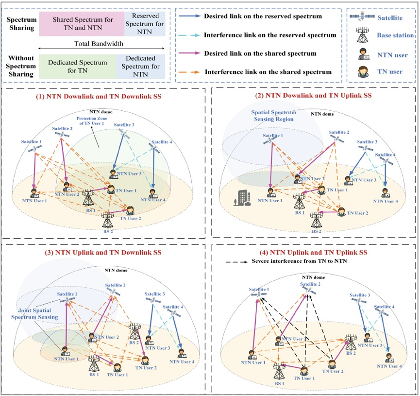 |
2. Satellite-Borne and Terminal Physical-Layer Communication Algorithms
6G satellite communication systems require cutting edge physical layer techniques to realize high throughput, reliable and global connectivity over highly time varying space ground channels. Unlike terrestrial communication systems, satellite links suffer from long propagation delays, significant Doppler shifts, fast channel fluctuation, broad coverage footprints, limited onboard hardware, and strict payload complexity and power constraints. Meanwhile, the proliferation of multi antenna satellites and mega constellations opens new possibilities for advanced transceiver designs.
We investigate fundamental physical layer algorithms for both satellite payloads and end user terminals. Our target is practical, high efficiency signal processing and transmission schemes that jointly account for satellite channel characteristics, node mobility, interference and hardware limitations. Our research covers theoretical algorithm derivation as well as implementation oriented design, with emphasis on low complexity, scalable solutions for next generation NTNs.
On satellite beamforming and multi antenna transmission
Channel estimation and synchronization for satellite communications
Doppler estimation and compensation for high mobility NTNs
OFDM/OTFS and advanced waveform optimization for satellite channels
Multi user detection and interference suppression
Cooperative joint transmission and reception among satellites
Low complexity algorithms for resource limited satellite user terminals, etc.
|
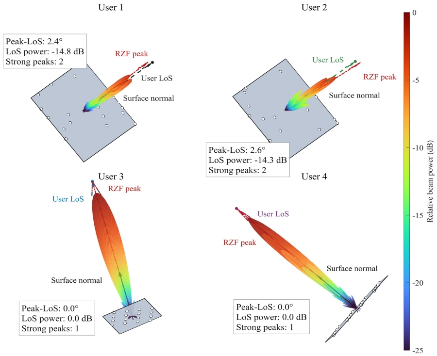 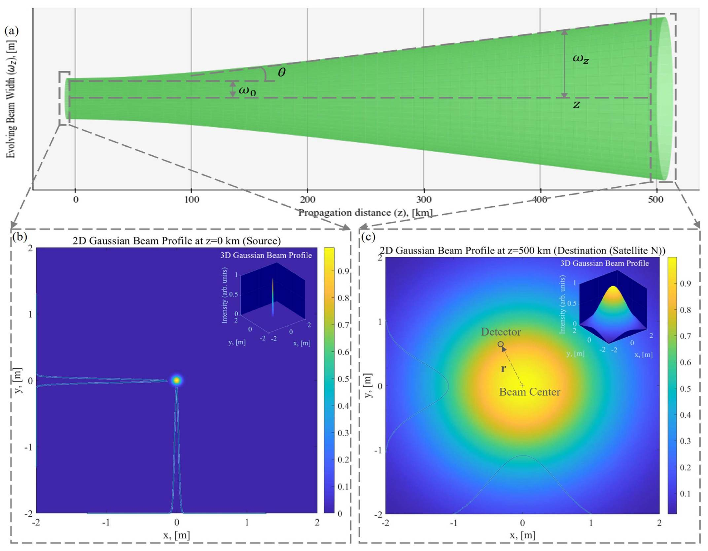 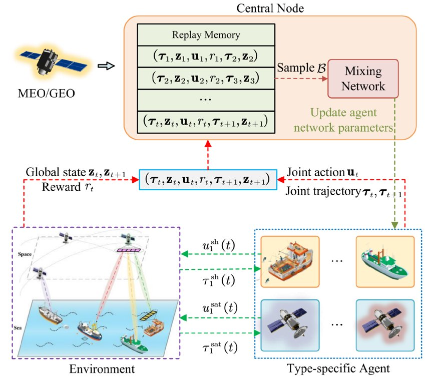 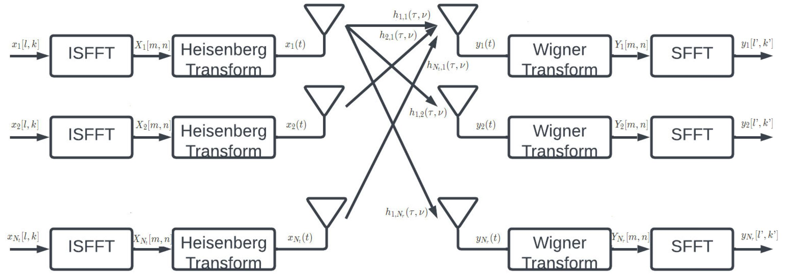 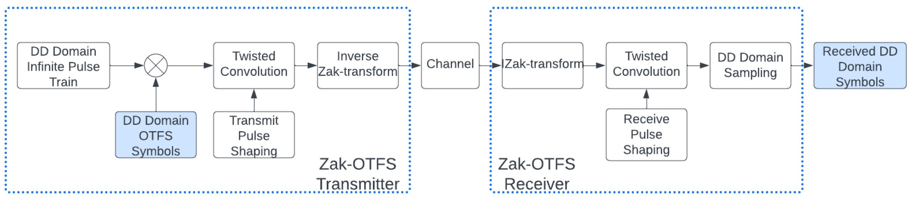 |
3. In-Space Computing and Space-Native Artificial Intelligence (AI)
With the rapid scaling of satellite constellations, satellites are transforming from pure communication relays into geographically distributed computing nodes in outer space. In space computing enables data processing close to its source, avoiding massive raw data backhaul toward ground facilities and supporting low latency space born services. The fusion of communication, computing and artificial intelligence will serve as a cornerstone for future intelligent space networks.
In space computing faces inherent difficulties including constrained onboard compute capacity, tight energy budgets, intermittent inter node connectivity, large propagation latency, time evolving topology and heterogeneous satellite platforms. Conventional ground cloud and edge computing paradigms cannot be directly ported to such harsh space environments. We study distributed computing architectures and intelligent processing mechanisms tailored for satellite networks, pursuing space native solutions that fully adapt to unique space operational conditions.
Space native AI envisions building space computing power networks and distributed in orbit space data centers atop satellite constellations, instead of simply migrating terrestrial AI models to satellites. It advocates model training, inference, feature extraction and intelligent decision making performed natively in orbit. This paradigm alleviates heavy data downloading burdens, reduces end to end latency for space missions, and supports real time onboard intelligence for communication, remote sensing and in orbit task scheduling. It poses new challenges: distributed model update under intermittent links, computation energy trade offs on resource constrained satellites, adaptive federated learning across heterogeneous orbital nodes, and lightweight AI architecture customized for space hardware.
Multi satellite cooperative in space computing
Computation offloading and task scheduling over satellite networks
Space computing power networks
On orbit AI training and inference
Distributed AI learning and inference across satellite constellations
Onboard AI for satellite communications and networking
Space native AI architectures and algorithms
Resource aware intelligent scheduling for large scale AI enabled satellite constellations, etc.
|
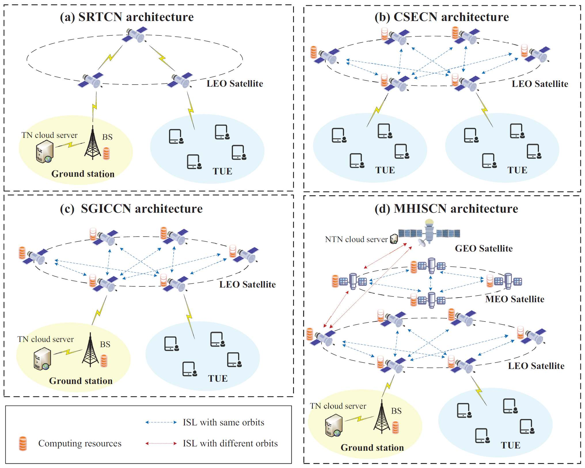 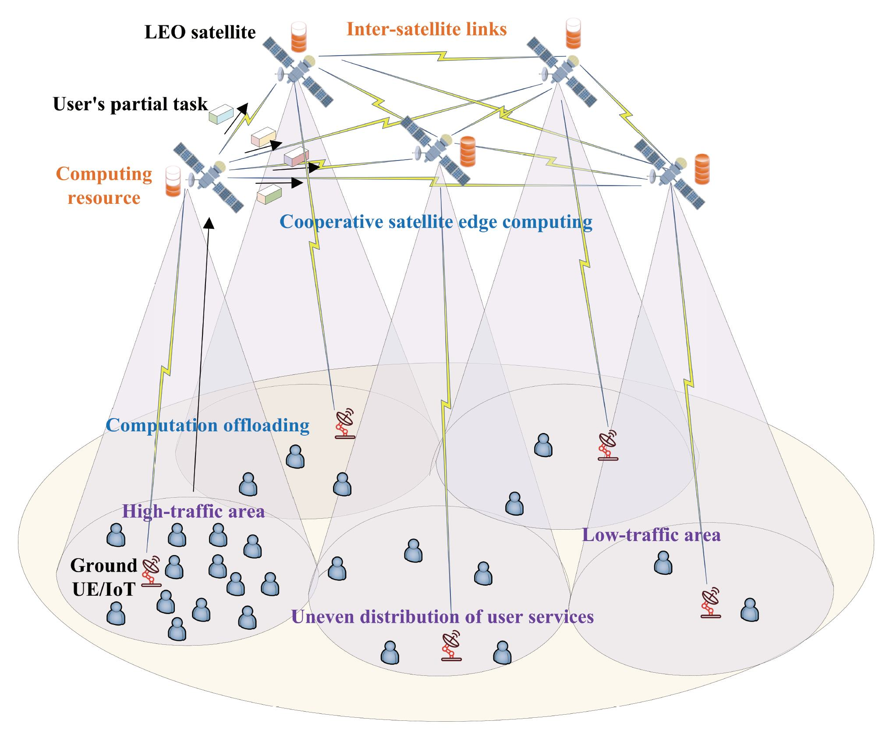 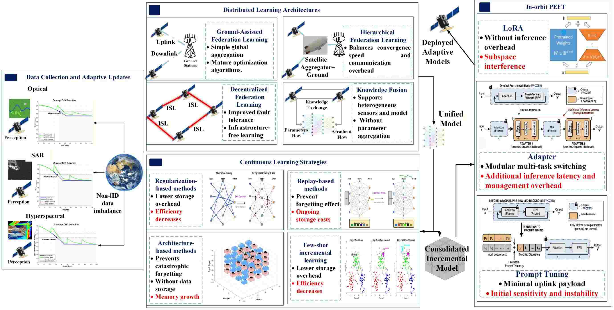 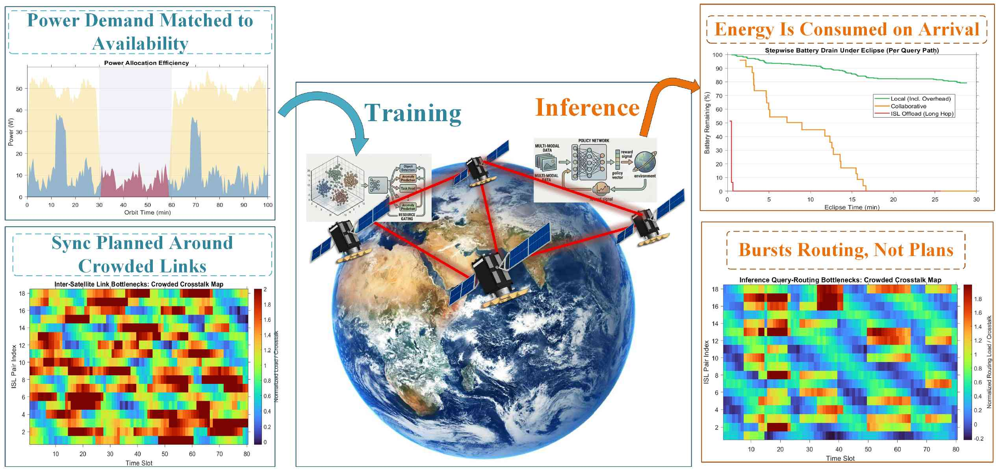 |
4. Preliminary Research on Large-Scale Satellite Constellation Networking Technologies
Massive deployment of low Earth orbit (LEO) mega constellations is reshaping non terrestrial network architectures and unlocking new potential for worldwide connectivity and distributed space services. As satellite systems scale from isolated spacecraft to mega constellations, satellite networks operate as large scale, highly dynamic distributed communication systems. Thousands of satellites interconnected via inter satellite links and interoperable with terrestrial infrastructure deliver flexible, expandable network resources. At the same time, massive node quantity and high orbital mobility bring tough challenges in topology control, routing, inter node coordination, time synchronization and overall network scalability.
We explore core networking technologies for future large scale satellite constellations. Beyond point to point satellite link studies, we treat the entire constellation as a holistic large scale distributed system, and investigate its network architecture, connectivity property, inter satellite communication and coordination mechanisms. Our objective is to establish scalable networking principles to sustain efficient operation and future evolution of satellite mega constellations.
• Stochastic geometry driven network performance analysis and optimization • Inter satellite link architecture and network topology design • Dynamic topology management and routing for satellite networks • Multi satellite cooperative communications and networking • Radio frequency and optical inter satellite link technologies • Distributed coordination and network synchronization • Scalable network protocols for satellite mega constellations • Interworking and integration between large scale constellations and terrestrial networksStochastic geometry driven network performance analysis and optimization
Inter satellite link architecture and network topology design
Dynamic topology management and routing for satellite networks
Multi satellite cooperative communications and networking
Radio frequency and optical inter satellite link technologies
Distributed coordination and network synchronization
Scalable network protocols for satellite mega constellations
Interworking and integration between large scale constellations and terrestrial networks, etc.
|
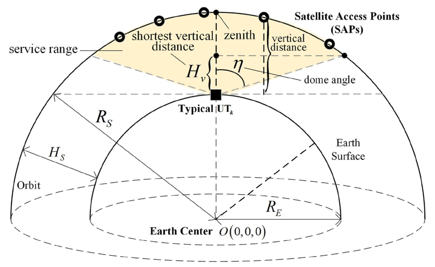 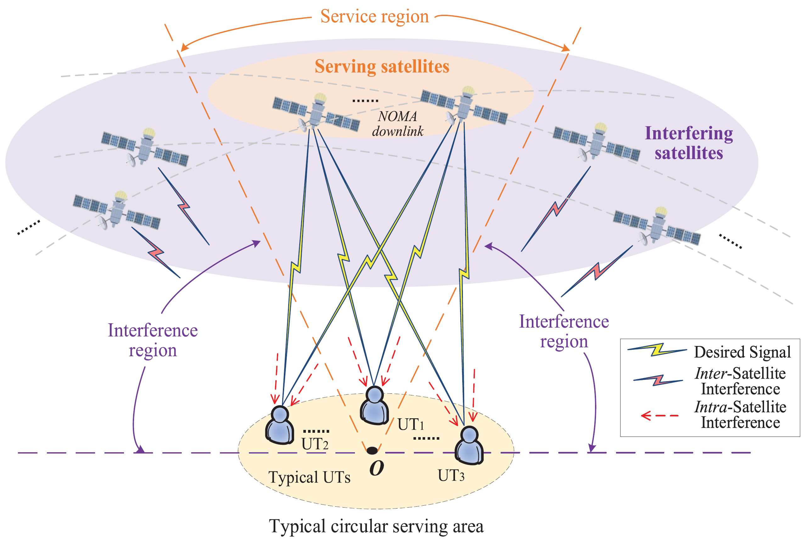 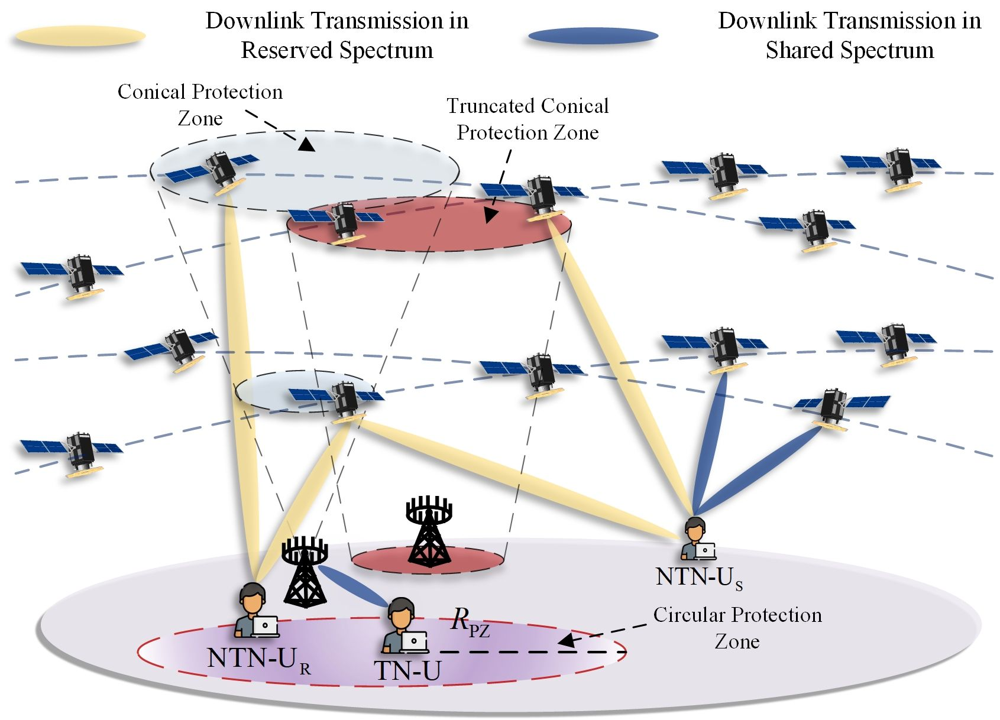 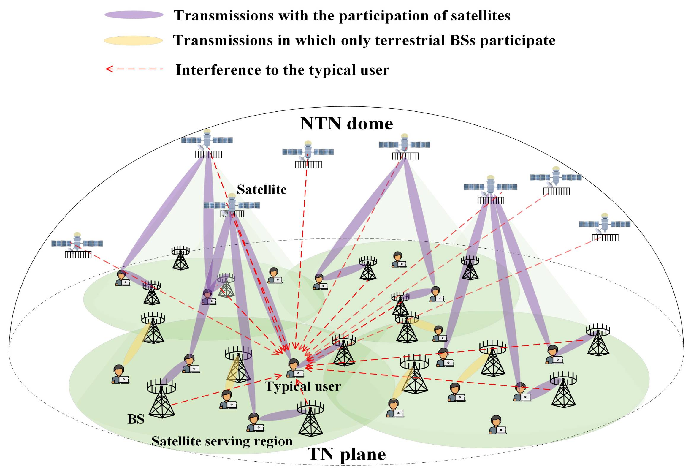 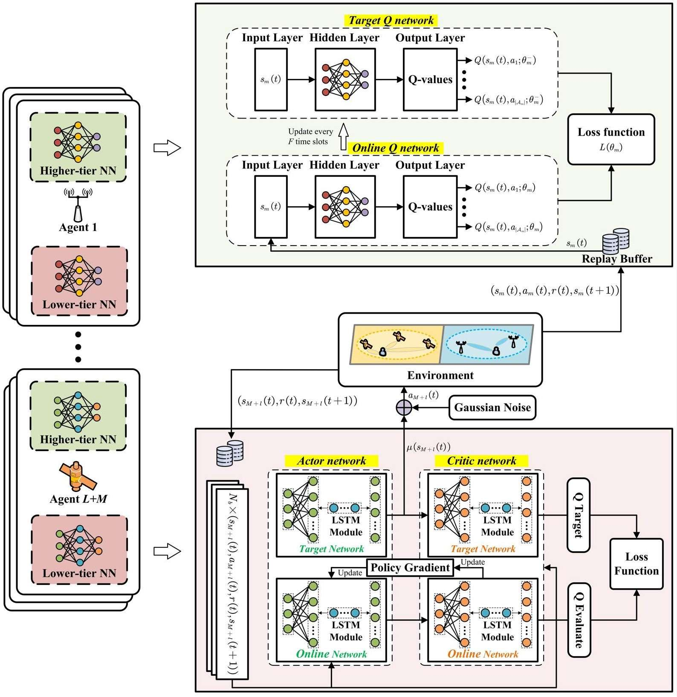 |